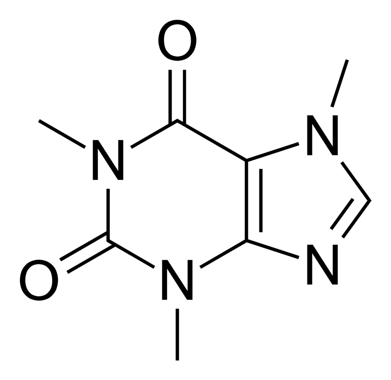

Physically speaking, tea has properties of both a solution and a suspension. It is a solution of all the water-soluble compounds that have been extracted from the tea leaves, such as the polyphenols and amino acids, but is a suspension when all of the insoluble components are considered, such as the cellulose in the tea leaves.
Caffeine constitutes about 3% of tea's dry weight, translating to between 30 milligrams (0.0011 oz) and 90 milligrams (0.0032 oz) per 8-oz (250-ml) cup depending on the type, brand, and brewing method. A study found that the caffeine content of 1 gram (0.035 oz) of black tea ranged from 22–28 milligrams (0.00078–0.00099 oz), while the caffeine content of 1 gram (0.035 oz) of green tea ranged from 11–20 milligrams (0.00039–0.00071 oz), reflecting a significant difference. Tea also contains small amounts of theobromine and theophylline, which are stimulants, and xanthines similar to caffeine.
Black and green teas contain no essential nutrients in significant amounts, with the exception of the dietary mineral manganese, at 0.5 milligrams (1.8×10−5 oz) per cup or 26% of the Reference Daily Intake (RDI). Fluoride is sometimes present in tea; certain types of "brick tea", made from old leaves and stems, have the highest levels, enough to pose a health risk if much tea is drunk, which has been attributed to high levels of fluoride in soils, acidic soils, and long brewing.
The astringency in tea can be attributed to the presence of polyphenols. These are the most abundant compounds in tea leaves, making up 30–40% of their composition. Polyphenols include flavonoids, epigallocatechin gallate (EGCG), and other catechins.
It has been suggested that green and black tea may protect against cancer or other diseases such as obesity or Alzheimer's disease, but the compounds found in green tea have not been conclusively demonstrated to have any effect on human diseases.